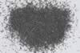

|
|
(For further information on spectroscopy, see:
http://speclab.cr.usgs.gov)
TITLE: Nickeline HS264 DESCRIPT
DOCUMENTATION_FORMAT: MINERAL
SAMPLE_ID: HS264
MINERAL_TYPE: Arsenate
MINERAL: Nickeline (Nickeline group)
FORMULA: NiAs
FORMULA_HTML: NiAs
COLLECTION_LOCALITY: Elliot Lake, Ontario, Canada
ORIGINAL_DONOR: Hunt and Salisbury Collection
CURRENT_SAMPLE_LOCATION: USGS Denver Spectroscopy Laboratory
ULTIMATE_SAMPLE_LOCATION: USGS Denver Spectroscopy Laboratory
SAMPLE_DESCRIPTION:
"This sample is impure, containing a small amount of calcite. Despite this contaminant, the sample is spectrally featureless throughout the range. The calcite probably only serves to slightly raise its overall reflectivity."
Hunt, G.R., J.W. Salisbury, C.J. Lenhoff, 1971, Visible and Near-Infrared spectra of Minerals and Rocks: IV. Sulphides and Sulphates. Mod. Geol. 3, pp 1-14.
IMAGE_OF_SAMPLE:

END_SAMPLE_DESCRIPTION.
XRD_ANALYSIS:
40 kV - 30 mA, 7.3-9.6keV
File: cobl264_mdi, *.out (smear on a quartz plate)
References: JCPDS #31-300, 11-513
Found: Nickeline (niccolite), wurtzite, many unindexed strong reflections
Sought but not found: chalcocite, chalcopyrite, cobaltite, covellite, marcasite,
pyrite, pyrrhotite
Comment: Intensities do not match JCPDS data well. Optically, a large proportion of a
colorless phase with poor cleavage and high birefringence - presumably the wurtzite.
In the powder used for the X-ray data, the colorless phase is much coarser than the
opaque(s). Will regrind and make another pattern.
XRD analysis by Steve Sutley indicates: nickelite (nickeline) (major), galena (major), calcite (minor), dolomite (minor), skutterudite (minor), cobaltite (minor), augite (trace)+ others?
END_XRD_ANALYSIS.
COMPOSITIONAL_ANALYSIS_TYPE: None # XRF, EM(WDS), ICP(Trace), WChem
COMPOSITION_TRACE: None
COMPOSITION_DISCUSSION:
END_COMPOSITION_DISCUSSION.
MICROSCOPIC_EXAMINATION:
Silver-white metallic luster. G. Swayze We thought this sample was cobalite but XRD indicates otherwise.
END_MICROSCOPIC_EXAMINATION.
SPECTROSCOPIC_DISCUSSION:
END_SPECTROSCOPIC_DISCUSSION.
SPECTRAL_PURITY: 1c2c3d4_ # 1= 0.2-3, 2= 1.5-6, 3= 6-25, 4= 20-150 microns
| LIB_SPECTRA_HED: | where | Wave Range | Av_Rs_Pwr | Comment |
|---|---|---|---|---|
| LIB_SPECTRA: | splib04a r 1186 | 0.2-3.0µm | 200 | g.s.= 226 µm |
| LIB_SPECTRA: | splib05a r 4939 | 0.2-3.0µm | 200 | g.s.= |
| LIB_SPECTRA: | splib06a r 15882 | g.s.= | ||
| LIB_SPECTRA: | splib06a r 15893 | g.s.= |
{kind=link}